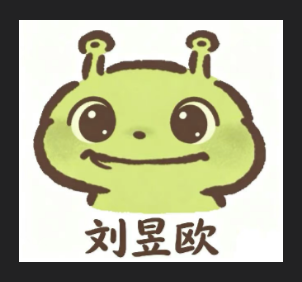
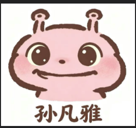

♥ 这里住着绿虫虫和粉虫虫
今天也要
黏在一起。
吃饭要一起，出去玩也要一起。
没什么事的时候，就黏着。
这些都是虫虫们的小日子。
绿虫虫喜欢粉虫虫♡粉虫虫喜欢三文鱼，也喜欢绿虫虫
虫虫们最喜欢黏着 ♡绿虫虫粉虫虫这是我们。分开一点都不行。


就要这样贴贴。
今天也好喜欢你。
4 个一起去过的地方2 只黏黏糊糊的虫虫0 件以后想一起做的事
OUR DAYS, OUR PHOTOS
我们俩的相册
去哪儿了，吃什么了，还有好多黏在一起的照片。
这页还空着
放点我们俩的日常吧。
每个地方都能一直加照片，点相册就能看。
公开相册
粉虫虫最爱吃的今天吃什么？
今天吃什么？
三文鱼！
这个问题，粉虫虫很有发言权。
绿虫虫陪着吃，吃完继续黏着。
NEXT TIME, WITH YOU
以后还想一起……
想到什么就写下来，做到了就打个勾。
虫虫们的小计划
还有好多地方，想和你一起去。
先记着，慢慢来。明天也没别的事，
就是想继续黏着你。